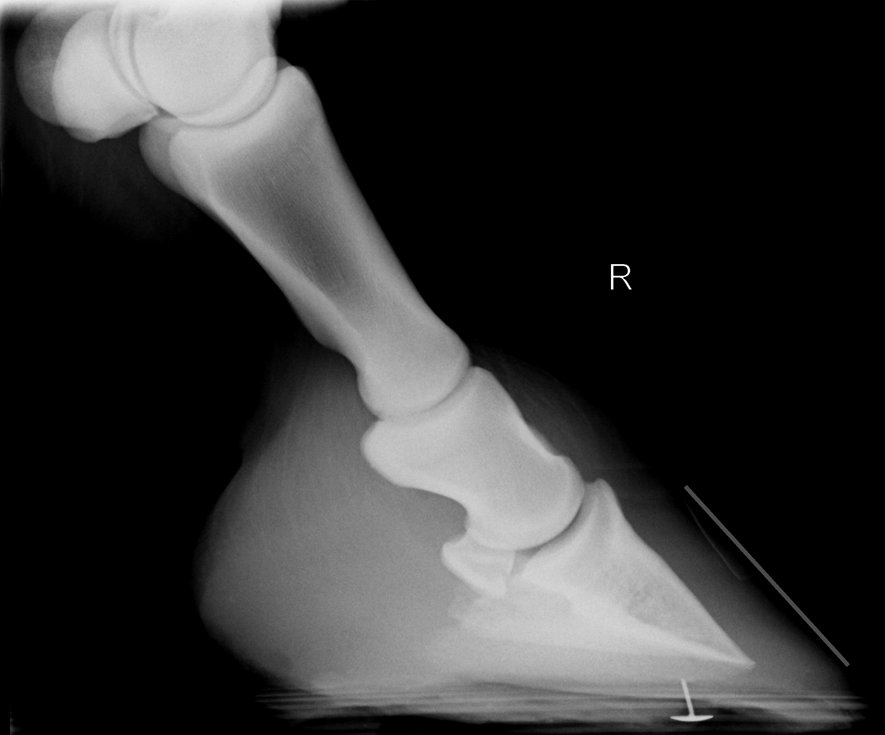
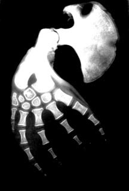
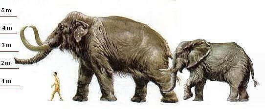
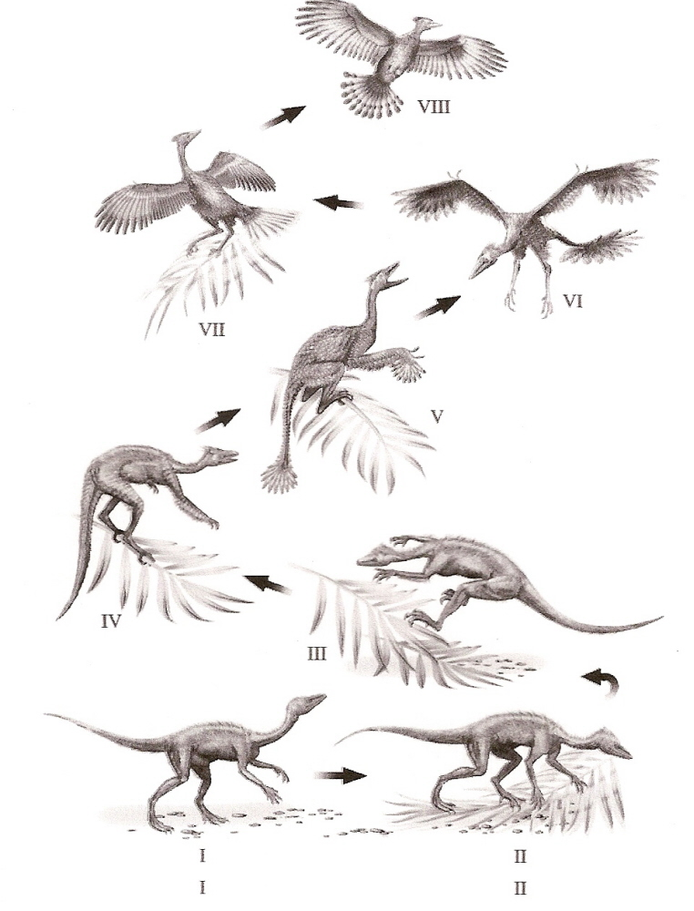

Adaptations
Why am I here today?
Evolution
Seeing old things in new ways


Blackberry
Dispersal
What's your impression of evolution by natural selection?
Lamarck
Evolution By Natural Selection
Evidence
Genetics — DNA
Some of my favorite adaptations
Camoflauge & Defenses
Leafy Sea Dragons
Octopus
Hawk Moth Caterpillar
Pebble Toad
Sensory
Star Nosed Mole
Venus Fly Trap
Regulation
Elephant ears

Co-evolution
Cordryceps
Sexual Selection
Birds of Paradise
Flight
